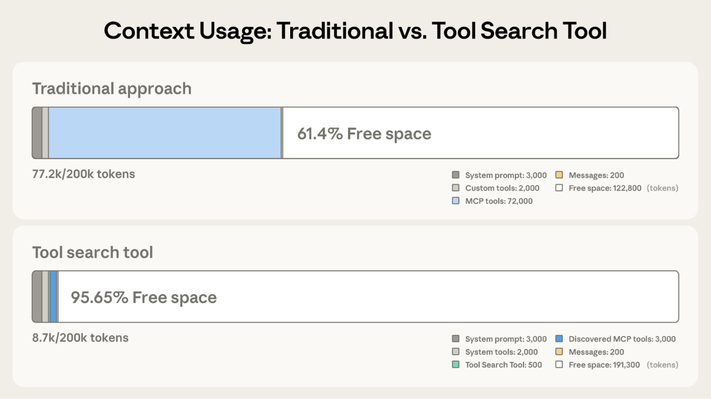

Claude 开发者平台的高级工具使用
原文：Introducing advanced tool use on the Claude Developer Platform 来源：Anthropic Engineering | 2025-11-24 作者：Bin Wu 等
· · ·
索引
· · ·
AI agent 的未来是模型能无缝地跨数百或数千个工具工作。一个集成 git 操作、文件操作、包管理器、测试框架和部署管道的 IDE 助手。一个同时连接 Slack、GitHub、Google Drive、Jira、公司数据库和数十个 MCP 服务器的运营协调器。
要构建有效的 agent，它们需要在不将每个定义预先塞入上下文的情况下使用无限工具库。我们关于用 MCP 实现代码执行的博客讨论了工具结果和定义有时如何在 agent 读取请求前消耗 50,000+ token。Agent 应该按需发现和加载工具，只保留与当前任务相关的内容。
Agent 还需要从代码中调用工具的能力。使用自然语言工具调用时，每次调用需要完整的推理 pass，中间结果无论是否有用都堆积在上下文中。代码天然适合编排逻辑——循环、条件、数据转换。
Agent 还需要从示例中学习正确的工具使用，而不仅仅是 schema 定义。JSON schema 定义了结构上有效的内容，但无法表达使用模式。
今天我们发布三个功能：
1. Tool Search Tool — 允许 Claude 使用搜索工具访问数千个工具而不消耗上下文窗口 2. Programmatic Tool Calling — 允许 Claude 在代码执行环境中调用工具，减少对模型上下文窗口的影响 3. Tool Use Examples — 提供展示如何有效使用给定工具的通用标准
在内部测试中，这些功能帮助我们构建了用传统工具使用模式不可能实现的东西。例如，Claude for Excel 使用 Programmatic Tool Calling 读取和修改数千行的电子表格而不过载模型的上下文窗口。
· · ·
Tool Search Tool
问题：工具定义的 Token 开销
MCP 工具定义提供重要上下文，但随着更多服务器连接，token 会累积。考虑一个五服务器设置：GitHub（35 工具，~26K token）、Slack（11 工具，~21K token）、Sentry（5 工具，~3K token）、Grafana（5 工具，~3K token）、Splunk（2 工具，~2K token）。这是 58 个工具在对话开始前消耗约 55K token。在 Anthropic，我们见过工具定义在优化前消耗 134K token。
Token 成本不是唯一问题。最常见的失败是错误的工具选择和不正确的参数，特别是当工具有相似名称时。
解决方案：按需发现
Tool Search Tool 不是预先加载所有工具定义，而是按需发现工具。Claude 只看到当前任务实际需要的工具。
- 传统方法： 所有工具定义预先加载（50+ MCP 工具约 72K token），对话开始前总上下文消耗约 77K token
- 使用 Tool Search Tool： 只预先加载 Tool Search Tool 本身（约 500 token），按需发现工具（3-5 个相关工具，约 3K token），总上下文消耗约 8.7K token，保留 95% 的上下文窗口
这代表 85% 的 token 使用减少，同时保持对完整工具库的访问。内部测试显示在大型工具库上的准确率显著提升：Opus 4 从 49% 提升到 74%，Opus 4.5 从 79.5% 提升到 88.1%。
工作原理
你将所有工具定义提供给 API，但用 defer_loading: true 标记工具使其可按需发现。延迟工具不会初始加载到 Claude 的上下文中。当 Claude 需要特定能力时，它搜索相关工具。Tool Search Tool 返回匹配工具的引用，这些引用在 Claude 的上下文中展开为完整定义。

· · ·
Programmatic Tool Calling
问题：中间结果的上下文污染
传统工具调用随着工作流变复杂会产生两个根本问题：
- 中间结果的上下文污染： 分析 10MB 日志文件时，整个文件进入上下文窗口，即使 Claude 只需要错误频率摘要
- 推理开销和手动综合： 每次工具调用需要完整的模型推理 pass。五步工作流意味着五次推理 pass 加上 Claude 解析每个结果
解决方案：通过代码编排工具
Programmatic Tool Calling 让 Claude 通过代码而非单个 API 往返来编排工具。Claude 编写调用多个工具、处理输出、控制什么信息实际进入上下文窗口的代码。
示例：预算合规检查
任务："哪些团队成员超出了 Q3 差旅预算？"
传统方法：获取团队成员 → 20 人，每人获取 Q3 费用 → 20 次工具调用，每次返回 50-100 行项目。所有这些进入 Claude 的上下文：2,000+ 费用行项目（50KB+）。
使用 Programmatic Tool Calling：Claude 编写 Python 脚本编排整个工作流。脚本在代码执行工具（沙箱环境）中运行。Claude 的上下文只接收最终结果：超出预算的两三个人。2,000+ 行项目、中间求和和预算查找不影响 Claude 的上下文，将消耗从 200KB 原始费用数据减少到仅 1KB 结果。

效率收益：
- Token 节省： 平均使用从 43,588 降到 27,297 token，减少 37%
- 延迟降低： 当 Claude 在单个代码块中编排 20+ 工具调用时，消除 19+ 推理 pass
- 准确率提升： 内部知识检索从 25.6% 提升到 28.5%；GIA benchmark 从 46.5% 提升到 51.2%
· · ·
Tool Use Examples
问题：Schema 无法表达使用模式
JSON Schema 擅长定义结构——类型、必需字段、允许的枚举——但无法表达使用模式：何时包含可选参数、哪些组合有意义、或你的 API 期望什么约定。
格式歧义、ID 约定、嵌套结构使用、参数关联——这些歧义可能导致格式错误的工具调用和不一致的参数使用。
解决方案：直接在工具定义中提供示例
Tool Use Examples 让你在工具定义中直接提供示例工具调用。不是仅依赖 schema，而是向 Claude 展示具体使用模式。
从示例中，Claude 学习：
- 格式约定： 日期使用 YYYY-MM-DD，用户 ID 遵循 USR-XXXXX，标签使用 kebab-case
- 嵌套结构模式： 如何构造带嵌套 contact 对象的 reporter 对象
- 可选参数关联： 关键 bug 有完整联系信息 + 紧急 SLA 的升级；功能请求有 reporter 但无 contact/escalation；内部任务只有标题
在内部测试中，tool use examples 将复杂参数处理的准确率从 72% 提升到 90%。
· · ·
三个功能如何协同工作
构建采取真实世界行动的 agent 意味着同时处理规模、复杂性和精确性。这三个功能协同解决工具使用工作流中的不同瓶颈：
- 上下文因工具定义膨胀 → Tool Search Tool
- 大量中间结果污染上下文 → Programmatic Tool Calling
- 参数错误和格式错误的调用 → Tool Use Examples
它们是互补的：Tool Search Tool 确保找到正确的工具，Programmatic Tool Calling 确保高效执行，Tool Use Examples 确保正确调用。
· · ·
最佳实践
Tool Search Tool
- 工具搜索匹配名称和描述，所以清晰、描述性的定义能提高发现准确率
- 在 system prompt 中添加指导让 Claude 知道有什么可用
- 保持 3-5 个最常用工具始终加载，其余延迟
Programmatic Tool Calling
- 由于 Claude 编写代码来解析工具输出，清晰记录返回格式
- 选择适合程序化编排的工具：可并行运行的工具、可安全重试的操作
Tool Use Examples
- 使用真实数据（真实城市名、合理价格，不是"string"或"value"）
- 展示多样性：最小、部分和完整规范模式
- 保持简洁：每个工具 1-5 个示例
- 聚焦歧义：只在正确使用从 schema 不明显时添加示例
· · ·
开始使用
这些功能以 beta 版本提供。要启用它们，添加 beta header 并包含你需要的工具。这些功能将工具使用从简单的函数调用推向智能编排。随着 agent 处理跨越数十个工具和大型数据集的更复杂工作流，动态发现、高效执行和可靠调用成为基础。